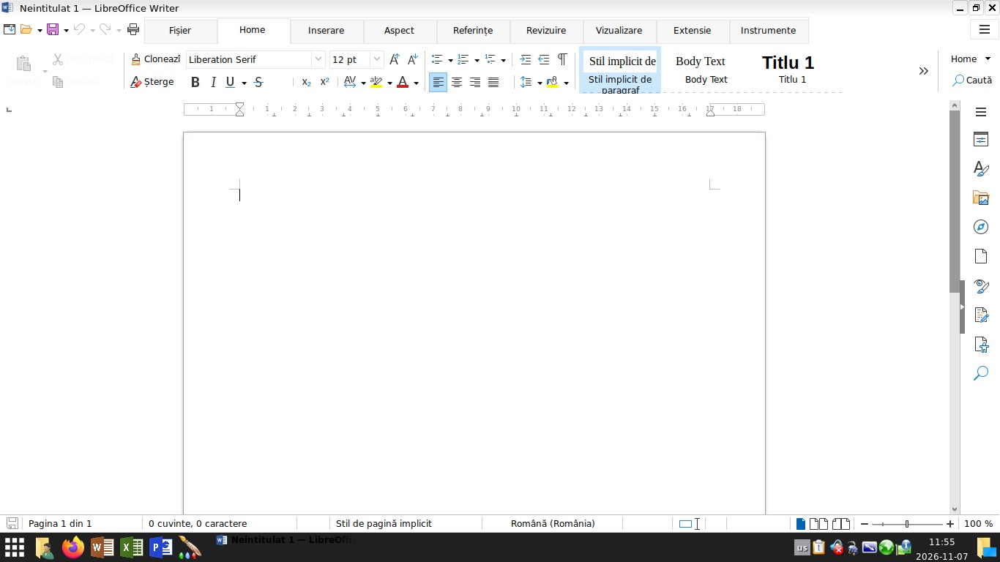
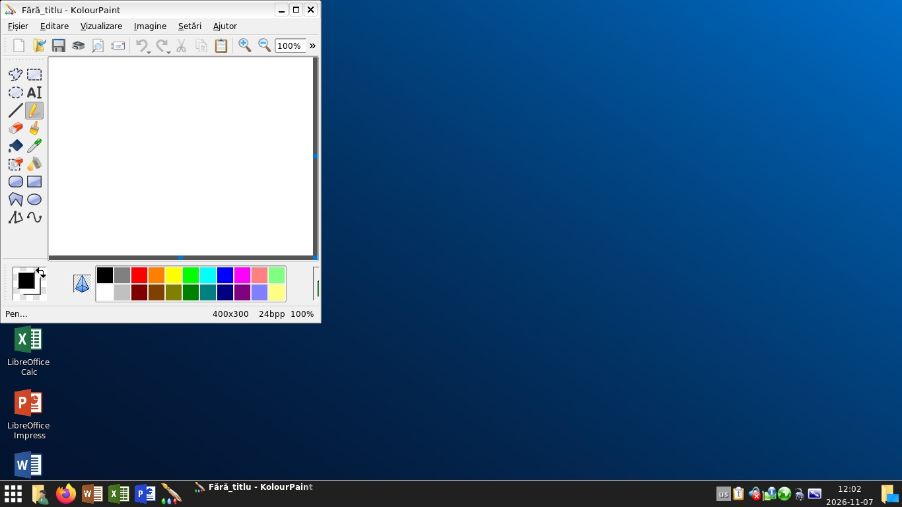
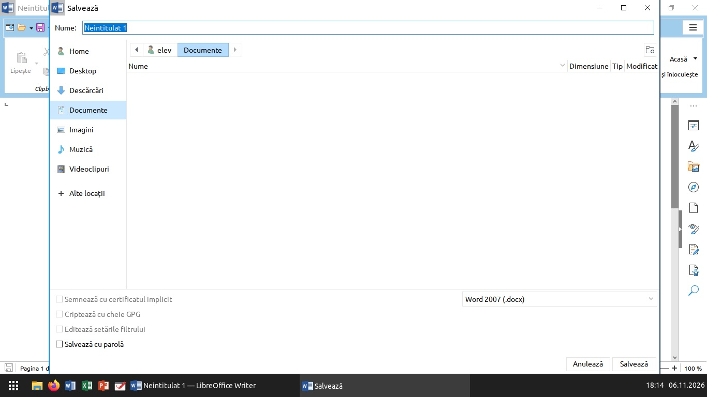
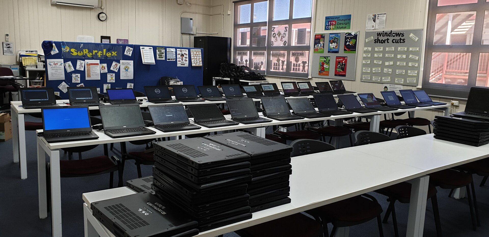
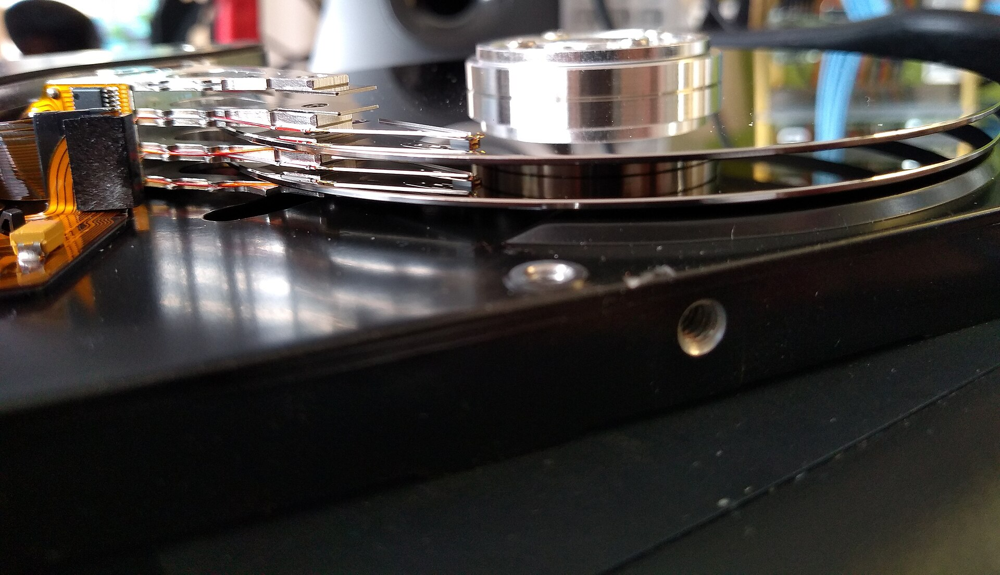
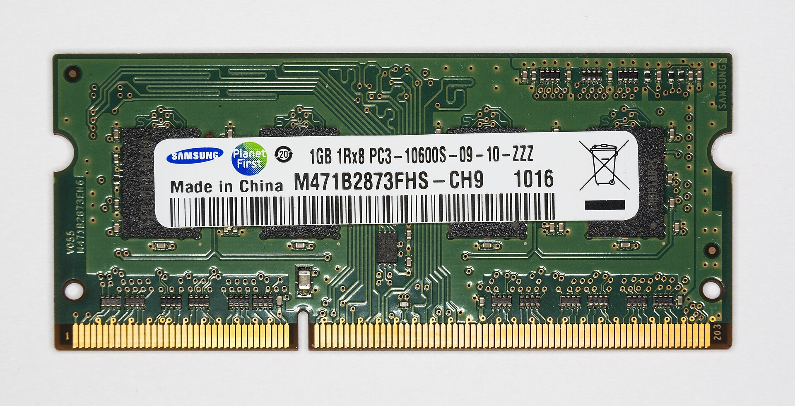

Elevii îl recunosc din prima
Bara jos, butonul Start în stânga, ceasul cu data în dreapta. Pe Desktop: Acest PC, Coș de gunoi, Lucrări și programele.
Q4OS, după rularea scriptului



Instalare dintr-o comandă
Deschide Terminalul în contul profesorului și lipește comanda. Scriptul recunoaște singur sistemul (Mint, Q4OS sau antiX) și îl configurează.
Instalare
$ sudo bash -c "$(curl -fsSL https://raw.githubusercontent.com/nazdravan/linux/main/instalare.sh)"Nu ai curl? Cu wget
$ sudo bash -c "$(wget -qO- https://raw.githubusercontent.com/nazdravan/linux/main/instalare.sh)"- durează 10–30 de minute, cu internet
- la final: sudo reboot
- setările se aleg mai jos, în Setări
Dezinstalare
Șterge contul elev, resetarea, intrarea automată și tema. Programele, limba și dosarul cu lucrări rămân. Întreabă înainte să schimbe ceva.
$ sudo bash -c "$(curl -fsSL https://raw.githubusercontent.com/nazdravan/linux/main/dezinstalare.sh)"Păstrezi contul elev cu PASTREAZA_ELEV=1, ștergi și lucrările cu STERGE_LUCRARI=1, puse după sudo.
Tu alegi ce face scriptul
Fiecare rând e o setare reală a scriptului. Apasă pe rânduri, iar dedesubt apare comanda de instalare cu setările tale.
Comanda,
în Terminal:
sudo bash -c "$(curl -fsSL https://raw.githubusercontent.com/nazdravan/linux/main/instalare.sh)"Fiecare oră începe curat
Toți elevii intră în același cont, „elev”. Ce schimbă ei se șterge la ieșirea din sesiune și la repornire. Rămâne doar ce salvează în dosarul Lucrări (nu se șterg).
Încearcă: fă dezordine pe desktop, apoi ieși din sesiune.
- (gol)
De la stick la sală
Pregătești un calculator, îl verifici, apoi copiezi discul pe celelalte. Apasă pe fiecare pas.
Instalezi sistemul
Mint XFCE, Q4OS sau antiX, de pe stick. Contul tău de profesor, cu parolă, devine administratorul.

Rulezi comanda
Una singură, în Terminal. Recunoaște sistemul și descarcă programele și tema, deci are nevoie de internet.
profesor@pc-01:~$ sudo bash -c "$(curl -fsSL \
https://raw.githubusercontent.com/nazdravan/linux/main/instalare.sh)"==> Sistem: Linux Mint XFCE → configurare-sala.sh
Descărcat. Pornesc configurarea.Aștepți o pauză mare
10–30 de minute, cât îi trebuie HDD-ului. Apoi repornești calculatorul.

Verifici ca un elev
Calculatorul intră singur în contul elev. Deschide Word, salvează, schimbă tastatura, ieși și intră din nou: schimbările au dispărut.
Potrivești contul
Oprești resetarea, aranjezi contul elev cum vrei, apoi îl salvezi ca nou șablon.
$ sudo cont-elev pauza
# aranjezi contul elev
$ sudo cont-elev salveaza
$ sudo cont-elev stare# te-ai răzgândit:
$ sudo cont-elev anuleazaCopiezi pe toate
Clonezilla copiază discul pe celelalte calculatoare. Fiecare primește apoi un nume propriu.
# înainte de clonare:
$ sudo truncate -s 0 /etc/machine-id
$ sudo apt clean# după, pe fiecare:
$ sudo hostnamectl set-hostname pc-07Trei variante
Contul elevului, dosarul Lucrări, formatele Office, româna și Alt+Shift sunt la fel în toate. Diferă cât de ușor e sistemul și cât de aproape arată de Windows.
Linux Mint XFCE
configurare-sala.sh · Mint 22 sau 23- Când
- Implicit. Cel mai ușor de întreținut, cu cea mai mare comunitate.
- Arată
- Cel mai aproape de Windows 10: temă și iconițe Windows 10, Whisker Menu.
- Paint
- KolourPaint.
- Resetarea
- La ieșirea din LightDM și la pornire, printr-un serviciu systemd.
Q4OS Trinity
configurare-q4os.sh · Q4OS 6- Când
- Mint e prea greu pentru calculatoarele tale, iar antiX prea simplu.
- Arată
- Bară închisă, ferestre albe, meniul Kickoff cu căutare sus.
- Paint
- KolourPaint, în română.
- Resetarea
- Prin ecranul de logare TDM, la intrare și la ieșire, plus la pornire.
antiX 26
configurare-antix.sh · antiX 26 full- Când
- Pentru calculatoarele cele mai slabe: consumă cel mai puțin.
- Arată
- IceWM cu tema Windows 10 proprie, meniu simplu: Documente, Tabele, Internet.
- Paint
- Drawing (KolourPaint nu se poate instala pe antiX).
- Resetarea
- Prin ecranul de logare slimski. Merge fără systemd, cu orice init.
Întrebări de la colegi
Trebuie să știu Linux?
Nu mult. Instalezi sistemul de pe stick, ca pe Windows, și scrii o singură comandă în Terminal. Restul face scriptul.
Ce se întâmplă cu lucrările elevilor?
Tot ce salvează în dosarul „Lucrări (nu se șterg)” rămâne. Dosarul e în /srv/lucrari, în afara contului elev, și se poate copia pe stick la sfârșitul orei.
Cum intru eu, profesorul?
Ieși din sesiunea elevului și intri cu numele și parola ta în ecranul de logare. Doar contul tău are drepturi de administrator.
Pot schimba ce văd elevii?
Da: sudo cont-elev pauza, aranjezi contul elev, apoi sudo cont-elev salveaza. Șablonul vechi se întoarce cu sudo cont-elev anuleaza.
Ce distribuție aleg?
Mint, dacă merge bine pe calculatoarele tale. Q4OS dacă Mint e prea greu, antiX pentru cele mai slabe. Cel mai bine e să le încerci pe un calculator.
Merge pe 32 de biți?
Nu. Scripturile sunt pentru sisteme de 64 de biți, ca toate cele trei distribuții actuale.
Am nevoie de internet?
Doar când rulezi scriptul: descarcă LibreOffice în română, Firefox și tema Windows 10. După aceea calculatorul merge și fără.
Cum le pun pe 15 calculatoare?
Cu Clonezilla: faci imaginea discului de pe primul și o scrii pe celelalte. Discurile țintă trebuie să fie la fel de mari sau mai mari.
Ce ajută cel mai mult, în afară de script?
Un SSD ieftin în locul HDD-ului. După el, încă 2 GB de memorie DDR3 second-hand.
A fost testat?
Pe sistemele din imaginile oficiale Mint 22.3, antiX 26.1 și Q4OS 6.10; capturile de pe pagină sunt de acolo. Pornirea automată, zram și discul se verifică pe primul calculator real, înainte de clonare.
Începe cu un singur calculator
O arhivă cu cele trei scripturi și instrucțiunile în română. Le copiezi pe stick și le duci la școală.
Descarcă arhiva .zip